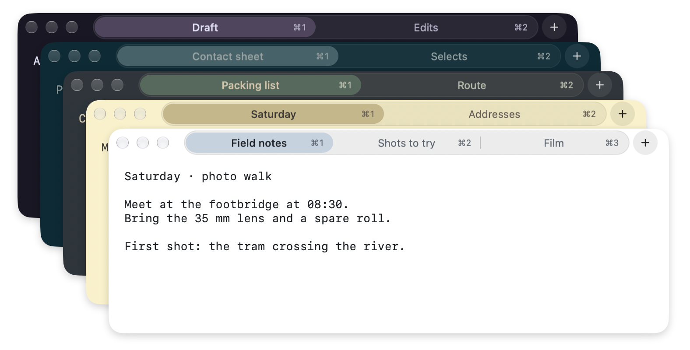
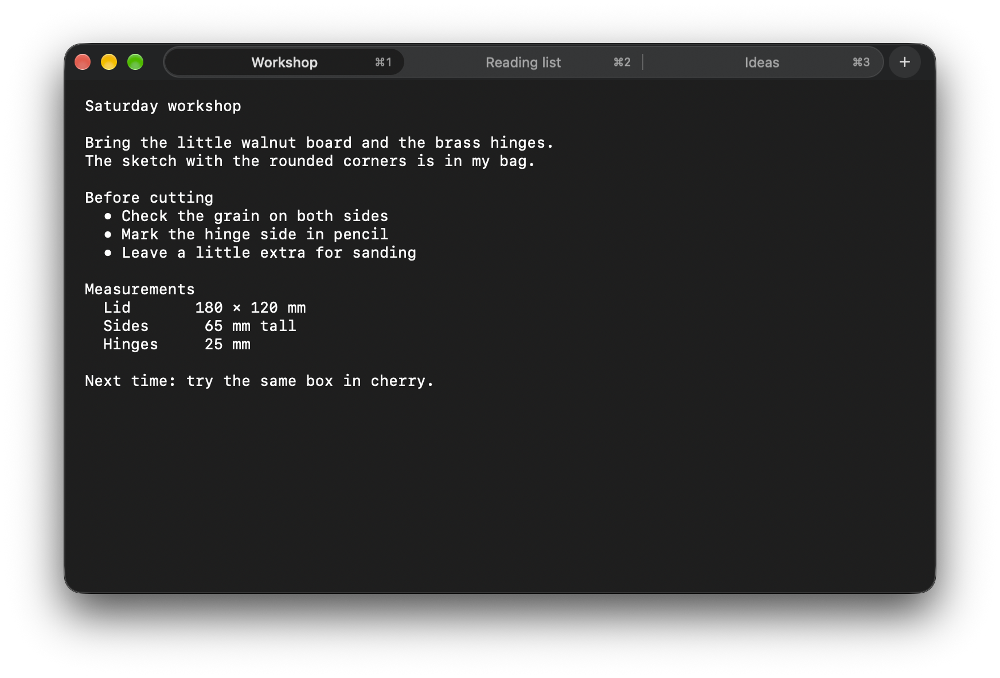
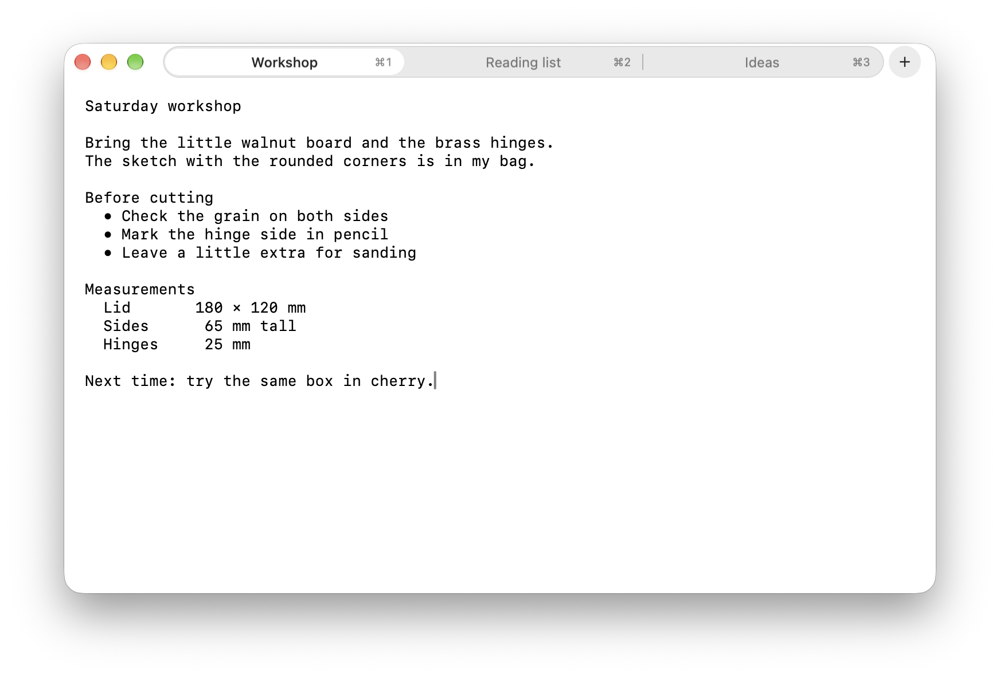

A tab for each thought.
Keep field notes beside a packing list. Give each tab a name, reorder it, or move it to its own window.

Press Control + comma to jot down a thought. Jotting saves it on your Mac as you type.
Download for MacFree · macOS 14 or later


Keep field notes beside a packing list. Give each tab a name, reorder it, or move it to its own window.

Control + comma brings Jotting to the front. Press it again to close the window. You can choose your own shortcut in Settings.
Sunday errands
Pick up the film before noon.
Choose a built-in theme or define your own light and dark palettes. Adjust the font, line height, and size to suit your eyes.
Free · macOS 14 or later